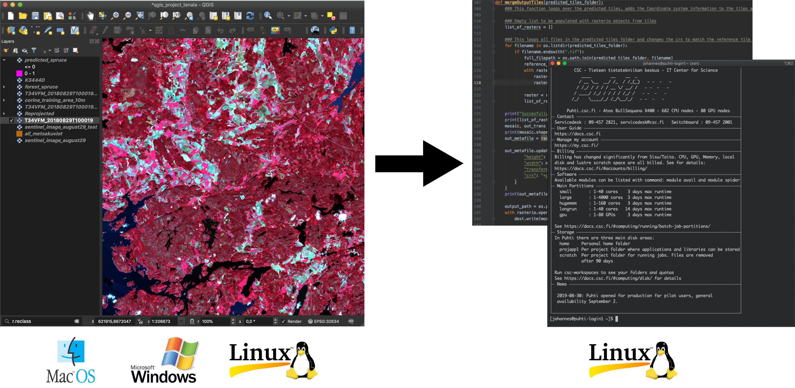
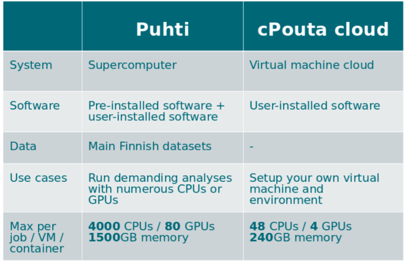
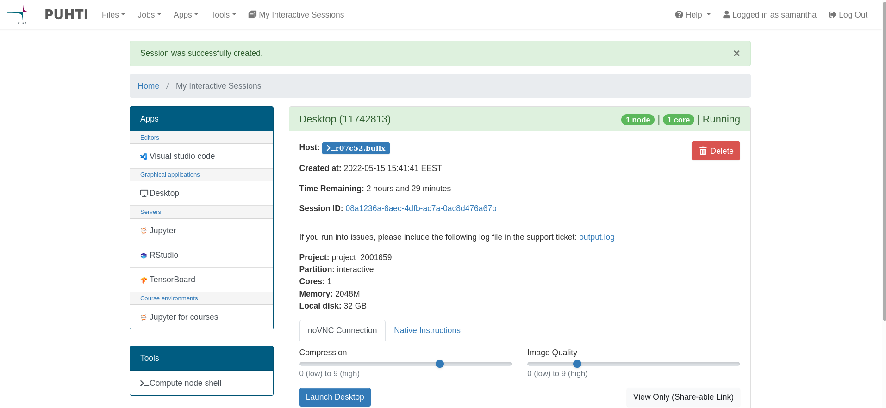

Earth Observation @ CSC
Storage and computing services
Samantha Wittke (CSC), 16.05.2022
CSC
- non-profit state enterprise with special tasks
- owned by Finnish state (70%) and higher education institutions (30%)
- headquaters in Keilaniemi, Espoo
- side offices and supercomputers in Kajaani
CSC services
research.csc.fi/en/service-catalog
Compute & Analyze
- cPouta / ePouta
- Puhti / Mahti / LUMI
- CSC Notebooks
- Rahti
Store, Share & Publish Data
- Allas
- EUDAT
- IDA
- Paituli
+ Sensitive Data (SD) services
Storing EO data
Allas object storage
- during project lifetime
- CSC account and project required
- access from other services and own computer
- some tools can read directly from Allas
- data is immutable
- Maximum size for free: 200TB
Key to efficient geocomputing

EO data processing and analysis

Pouta cloud
- Virtual Machines
- available on demand
- under own administration
- ideal for webserver / databases
Why use Puhti?
When own computer is not enough:
- Resource needs (time (> 2 hours), memory (> 8 GB), storage (> 50GB))
- prebuilt environments
- parallelization
- data availability (Paituli)
-> Outsource heavy computations, keep own computer free
It’s free! (for open science at Finnish higher education and state research institutes)
Puhti supercomputer
Main differences to laptop:
- memory and CPU(/GPU) availability (software needs to make use of this!)
- non-interactive
- resource knowledge
Computing solutions - Puhti

Puhti webinterface
-> check your data, testing, code development, file management, quotas, apps

Software
- FORCE & SPLITS
- GDAL / OGR
- LasTools
- MatLab / Octave
- Mapnik
- OpenDroneMap
- OrfeoToolbox
- PCL
- PDAL
- CloudCompare
- QGIS
- SagaGIS
- SNAP, Sen2cor
- WhiteboxTools
- Zonation
- ...
Python
- about 600 packages
- for raster, vector, pointcloud processing
- + scikit and other data science packages
other modules:
- Deep learning: tensorflow, pytorch -> have geopandas, rasterio
You can also create own environment / install own software! -> Tykky
R environment on Puhti
- R and RStudio Server
- 1300+ R packages
- Pre-installed libraries / software required by R packages
- Mathematics library for faster calculations (Intel® OneMKL)
- TensorFlow (for using the R Interface to Tensorflow)
Data
almost all data from Paituli on Puhti +
- SYKE open datasets
- LUKE Multi-source national forest inventory
- NLS Virtual rasters for DEMs
-> '/appl/data/geo'
Sentinel-2 L2A (agricultural Finland, 2016-2021)
-> Allas
List of Geoscience data sets available from CSC computing environment
What data would you be interested to have available on Puhti/Allas?
-> www.menti.com; 2773 8461
Common EO challenges
- many tiles, same process -> "embarassingly parallel" -> Array jobs
- huge "dataframes" -> dask(Python)/future(R)
- data transfer -> Allas
Get access
- Account
- Project
- Resources
- Services
- Find your account and project information
- Read the docs
- check our tutorials and geocomputing examples
CSC expertise
...at your fingertips:
+ servicedesk@csc.fi
- Geoinformatics team
- Data analytics and AI team
- Storage team
- Supercomputer team
- Cloudcomputing team
- Accounts team
- ...
How we can help
- 'Z is not working as expected'
- 'my code gives error Y '
- 'can A be installed to Puhti?'
- 'any advice how to do X?'
- training/example wishes
-> servicedesk@csc.fi
- Setting up pipelines, product provision, R&D, ...
-> CSC as project partner / subcontractor
How you can help
If you used any of our resources for your research, please acknowledge CSC and Geoportti in your publications, it is important for project continuation and funding reports. As an example, you can write:
"The authors wish to thank CSC - IT Center for Science, Finland (urn:nbn:fi:research-infras-2016072531) and the Open Geospatial Information Infrastructure for Research (Geoportti, urn:nbn:fi:research-infras-2016072513) for computational resources and support".
Training
- 'Using CSC environment efficiently' course
- 18.05: Webinar - CSC´s generic services for storing, sharing and publishing data
- 09.-10.06: Fundamentals of Machine Learning
- CSC geoinformatics training material
-> follow our training calendar
Summary
Puhti is an excellent tool if you
- need more computing power
- don’t want to run long analyses on your personal computer
- have a lot of data
- are using data provided on Puhti/Allas in large quantities
- are willing to use scripts and have some basic Linux skills
- are willing to learn to use Puhti
Pouta is an excellent tool if you
- want to use databases and web-/mapservices
- have linux server administration skills
Thank you for joining this workshop!
Geoinformatics team at CSC
Kylli Ek | Samantha Wittke | Katri Tegel

Earth Observation Data Information extractor
EODIE is a toolkit to extract object based timeseries information from Earth Observation data.
- objects as polygons
- timeframe of interest
- features (eg vegetation indices) -> per polygon timeseries of the selected features over the timeframe of interest